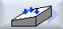

In der Funktion "Werkstücknullpunkt messen" werden Ihnen in der zugehörigen vertikalen Softkey-Leiste die Messvarianten "Kante setzen", "Kante ausrichten", "Rechtwinklige Ecke", "1 Bohrung" und "1 Kreiszapfen" angeboten.
Sie haben die Möglichkeit, diese durch Softkeys mit anderen Messvarianten zu ersetzen.
 | Softkey "Kante setzen" Der Softkey "Kante setzen" kann nicht mit dem Softkey einer anderen Messvariante belegt werden. |
Vorgehensweise
  | 1. | Die Funktion "Werkstücknullpunkt messen" ist angewählt. |
 | 2. | Drücken Sie den Softkey, den Sie mit einer neuen Messvariante belegen möchten, z.B. "1 Kreiszapfen". Das Fenster "1 Kreiszapfen" wird geöffnet. |
   | 3. | Öffnen Sie die Liste der Messvarianten, wählen Sie mit Hilfe der Taste <Cursor unten> und der Taste <Input> die gewünschte Messvariante. - ODER - |
 | | Wählen Sie mit der Taste <Select> in der Auswahlliste die gewünschte Messvariante, z.B. "Ebene ausrichten". Das Fenster "Ebene ausrichten" wird geöffnet. |
| | 4. | Geben Sie nötigen Parameter, um wie gewohnt die Messung vorzunehmen. |
| | | - ODER - |
 | | Drücken Sie den Softkey "Zurück". |
|  | | Der ausgewählte Softkey wird mit der neuen Messvariante, hier "Ebene ausrichten", belegt. |